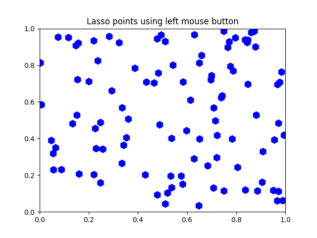

Note
Click here to download the full example code
Lasso Demo¶
Show how to use a lasso to select a set of points and get the indices of the selected points. A callback is used to change the color of the selected points
This is currently a proof-of-concept implementation (though it is usable as is). There will be some refinement of the API.
from matplotlib import colors as mcolors, path
from matplotlib.collections import RegularPolyCollection
import matplotlib.pyplot as plt
from matplotlib.widgets import Lasso
import numpy as np
class Datum:
colorin = mcolors.to_rgba("red")
colorout = mcolors.to_rgba("blue")
def __init__(self, x, y, include=False):
self.x = x
self.y = y
if include:
self.color = self.colorin
else:
self.color = self.colorout
class LassoManager:
def __init__(self, ax, data):
self.axes = ax
self.canvas = ax.figure.canvas
self.data = data
self.Nxy = len(data)
facecolors = [d.color for d in data]
self.xys = [(d.x, d.y) for d in data]
self.collection = RegularPolyCollection(
6, sizes=(100,),
facecolors=facecolors,
offsets=self.xys,
transOffset=ax.transData)
ax.add_collection(self.collection)
self.cid = self.canvas.mpl_connect('button_press_event', self.on_press)
def callback(self, verts):
facecolors = self.collection.get_facecolors()
p = path.Path(verts)
ind = p.contains_points(self.xys)
for i in range(len(self.xys)):
if ind[i]:
facecolors[i] = Datum.colorin
else:
facecolors[i] = Datum.colorout
self.canvas.draw_idle()
self.canvas.widgetlock.release(self.lasso)
del self.lasso
def on_press(self, event):
if self.canvas.widgetlock.locked():
return
if event.inaxes is None:
return
self.lasso = Lasso(event.inaxes,
(event.xdata, event.ydata),
self.callback)
# acquire a lock on the widget drawing
self.canvas.widgetlock(self.lasso)
if __name__ == '__main__':
np.random.seed(19680801)
data = [Datum(*xy) for xy in np.random.rand(100, 2)]
ax = plt.axes(xlim=(0, 1), ylim=(0, 1), autoscale_on=False)
ax.set_title('Lasso points using left mouse button')
lman = LassoManager(ax, data)
plt.show()
Keywords: matplotlib code example, codex, python plot, pyplot Gallery generated by Sphinx-Gallery